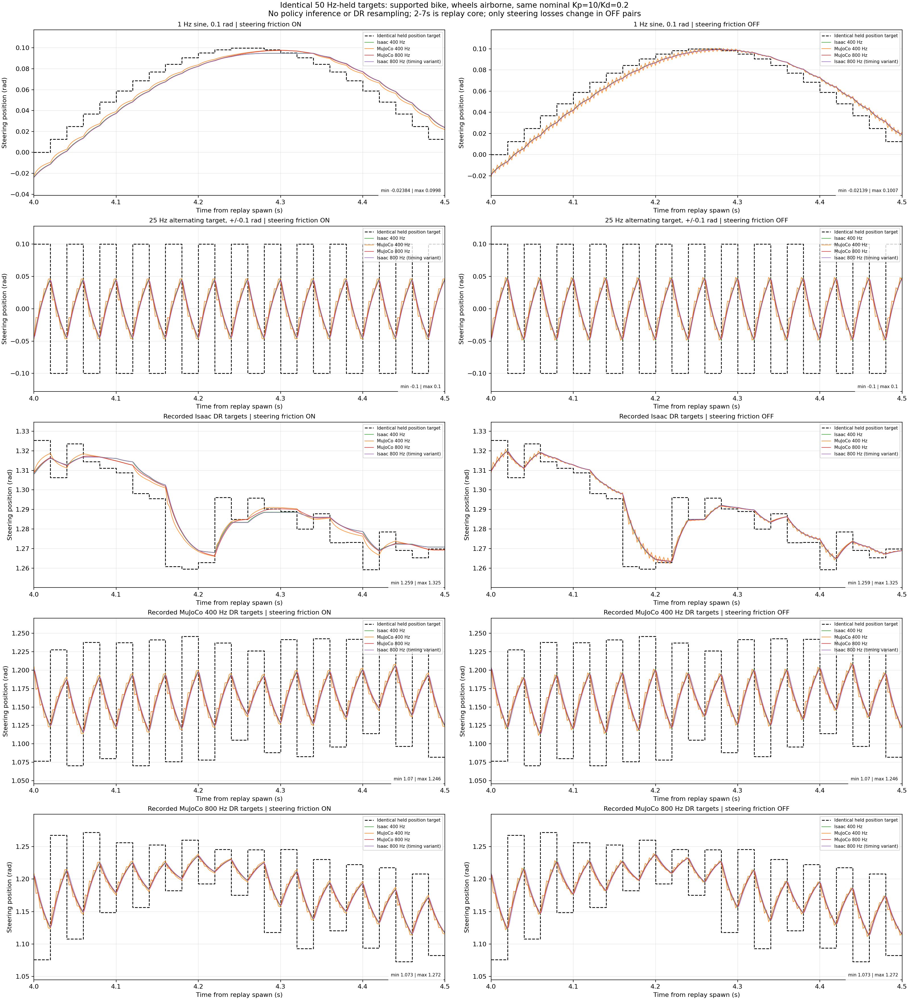
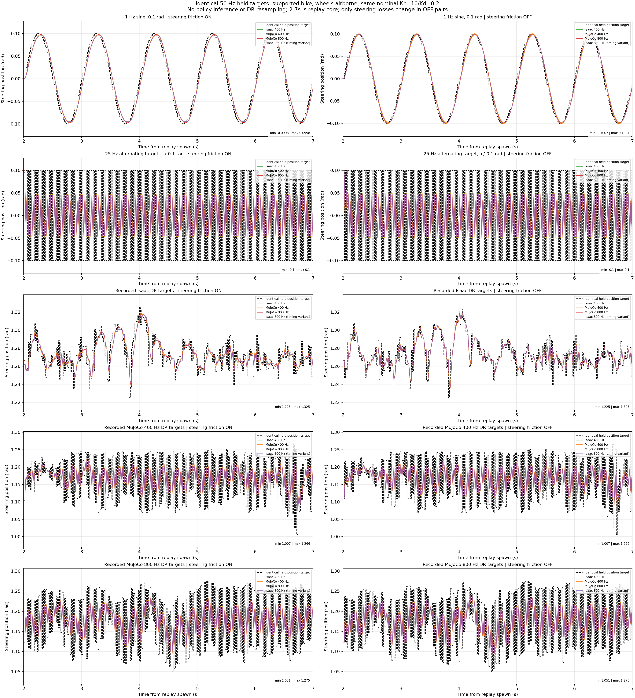
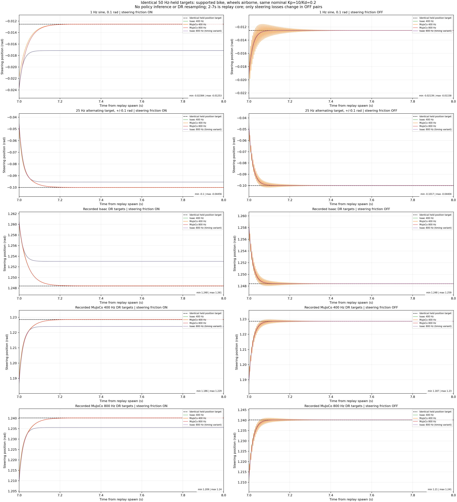
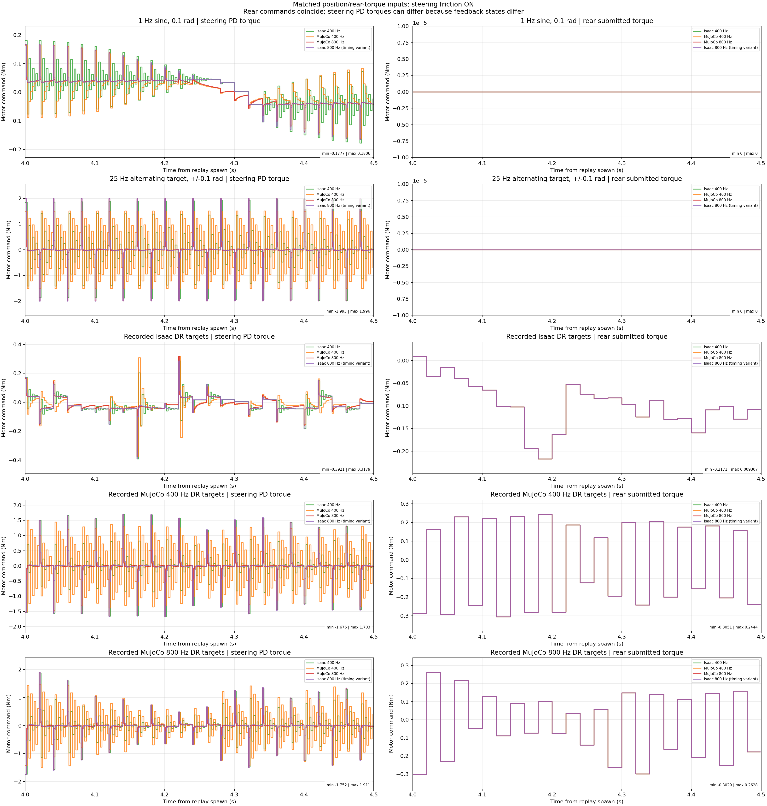
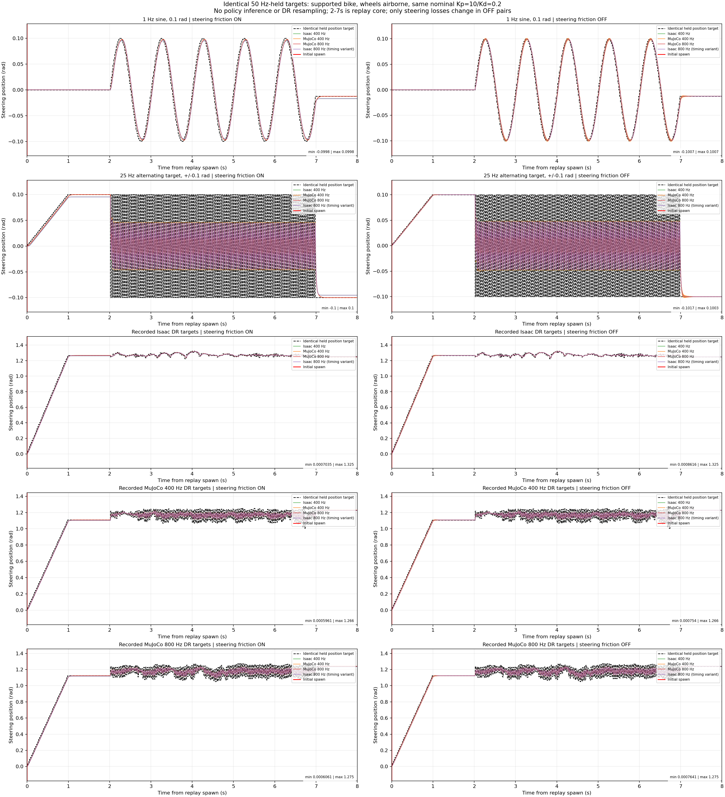
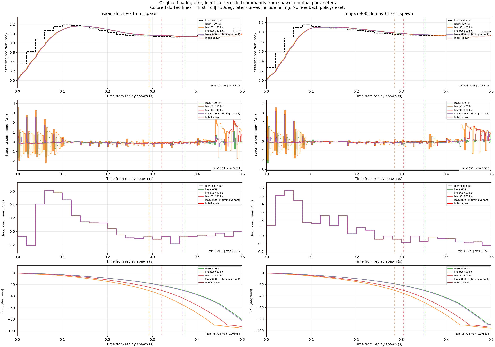

Both engines receive the exact same 50 Hz-held position targets and rear torque requests. Nominal matched parameters; supported motor bench with steering-friction ON/OFF pairs. Commands come from model 2500 DR recordings, but this is an actuator diagnostic, not a DR balance evaluation.
Full report and conclusions · Exact statistics · Protocol and source hashes · Verification





Colored dotted lines mark the first 30-degree lean; later samples include falling. These are not independent balancing evaluations.
